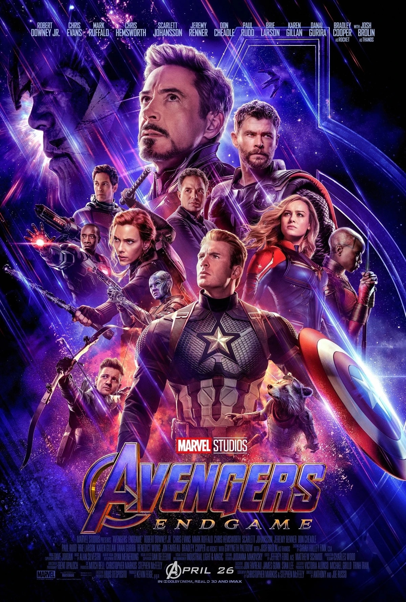
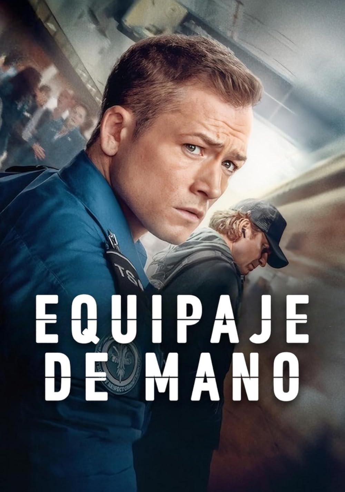

Reseñas de Películas
Aqui encontraras mis recomendaciones sobre mis películas favoritas.
Avengers: Endgame

Director: Joe Russo, Anthony Russo
Genero: Ciencia ficción. Fantástico. Acción | Superhéroes. Viajes en el tiempo. Cómic. Marvel Comics. MCU. Secuela
Sipnosis: Después de los eventos devastadores de 'Avengers: Infinity War', el universo está en ruinas debido a las acciones de Thanos, el Titán Loco. Con la ayuda de los aliados que quedaron, los Vengadores deberán reunirse una vez más para intentar deshacer sus acciones y restaurar el orden en el universo de una vez por todas, sin importar cuáles son las consecuencias... Cuarta y última entrega de la saga "Vengadores".
Mi opinion: Como fan del UCM, Avengers: Endgame es una película épica que cierra de manera magistral más de una década de historias. Después del impacto de Infinity War, los Vengadores restantes se enfrentan a la pérdida y buscan una forma de revertir el chasquido de Thanos. Lo que más valoro es cómo combina acción, emoción y momentos memorables para los fans, dándole cierre a arcos importantes como el de Iron Man y Capitán América. Es una película que no solo impresiona por sus efectos y batallas, sino por el peso emocional que lleva. Si has seguido la saga, Endgame es una experiencia imperdible.
Más información
Amber Alert
Director: Kerry Bellessa
Genero: Thriller | Secuestros / Desapariciones. Remake
Sipnosis: Cuando la pasajera Jaq (Hayden Panettiere) y el conductor Shane (Tyler James Williams) reciben una alerta de secuestro de una niña en sus teléfonos móviles, pronto se dan cuenta de que están detrás de un coche que coincide con la descripción del vehículo del secuestrador. Jaq y Shane deciden seguirle y comienzan a correr desesperadamente contra el tiempo para intentar salvar la vida de la niña, en un peligroso viaje que se convierte en un juego del gato y el ratón con el secuestrador.
Mi opinion: Si te gustan los thrillers con ritmo ágil y situaciones de alto riesgo, Amber Alert es una opción sólida. Aunque no reinventa el género, ofrece actuaciones convincentes y una narrativa que mantiene el suspenso. Ideal para una noche de película donde buscas adrenalina y emociones intensas..
Más información
Carry-On

Director: Jaume Collet-Serra
Genero: Thriller. Acción | Terrorismo. Aviones
Sipnosis: El día de Nochebuena, en el concurrido aeropuerto de Los Angeles, un desconocido chantajea a un joven agente de la Administración de Seguridad en el Transporte, encargado de escanear el equipaje de mano, para que le deje subir una misteriosa maleta al avión.
Mi opinion: Si disfrutas de los thrillers de acción con escenarios confinados y una narrativa tensa, Equipaje de mano es una excelente opción. Su ambientación navideña y ritmo ágil la convierten en una película ideal para una noche de entretenimiento. Disponible en Netflix, ha sido bien recibida por la crítica y ha captado la atención de la audiencia.
Más información
Volver a la página principal